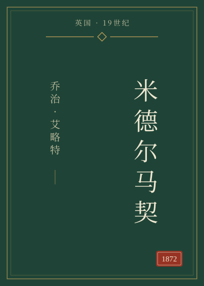
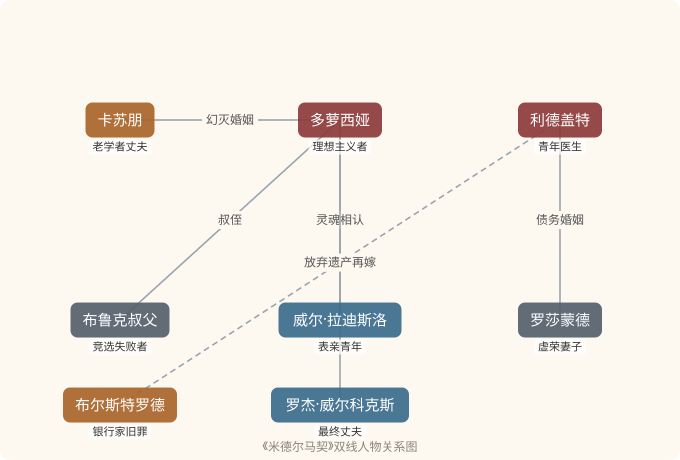

米德尔马契
一、基本信息
| 作者 | 乔治·艾略特 |
|---|---|
| 成书/出版 | 1871—1872年分八卷连载出版（Britannica） George Eliot — Encyclopaedia Britannica (by Gordon S. Haight)（百科全书） |
| 国别/地区 | 英国 |
| 时代 | 近代 · 19世纪 |
| 体裁 | 长篇小说（多线社会小说） |
| 语言 | 英语 |

《米德尔马契》双线人物关系图（人物关系图）
二、创作背景
副题（Britannica 语境）：'A Study of Provincial Life'（外省生活研究）——1830—32年改革法案前夜的英格兰中部小镇米德尔马契（通说）。
两故事缝合：《米德尔马契原稿》（多萝西娅故事）与《布鲁克小姐》（利德盖特故事）合并——'缝合痕迹'被批评界讨论（通说待核）。
伍尔夫评价：'one of the few English novels written for grown-up people'（少数为成年人写的英国小说之一——通说待核）。
三、内容脉络
多萝西娅线：的理想主义者多萝西娅·布鲁克嫁老学者卡苏朋（Casaubon）——寻找'所有神话的钥匙'的《世界神话索钥》永不完成；蜜月罗马的幻灭；卡苏朋死后遗赠条款：若嫁罗杰·威尔科克斯则失去遗产（通说）——多萝西娅仍嫁罗杰（威尔比——通说人名细节待核），放弃财产。
利德盖特线：青年医生 Tertius Lydgate——怀'医学发现'之志，与市长之女罗莎蒙德成婚——虚荣的妻子与债务的陷阱；与银行家 Bulstrode 的纠葛（旧罪——通说细节）使其蒙羞。
纽曼化：市长 Brooke 的改革竞选失败（'去告诉他们'被嘲笑——通说）；圣德莉莎修道院式的宗教观（卷首题词，通说待核）；威尔·拉迪斯洛的身世之谜与犹太遗产线（通说）。
结局：多萝西娅成为罗杰之妻、投身公共善（'她一生的影响力无算'——结尾原文意，待核）；利德盖特死于'没做成想做的事'；罗莎蒙德改嫁——'没有一家不受隐藏的生活影响'（原文名句意，待核）。
四、主要人物表
| 人物 | 身份 | 说明 |
|---|---|---|
| 多萝西娅·布鲁克 | 乡绅孤女 | '圣特蕾莎'式的理想主义者——婚姻作为'牺牲'的实验（通说） |
| 特图斯·利德盖特 | 青年医生 | '发现组织发生的原始组织'的野心家——被婚姻与债务毁灭的科学理想（通说） |
| 卡苏朋 | 老学者 | '干瘪的博学'——《世界神话索钥》永不完成（通说） |
| 罗莎蒙德·文西 | 市长之女 | '表面最甜'的自我中心（通说） |
| 罗杰·威尔科克斯 | 卡苏朋堂弟 | 正直的乡村绅士——多萝西娅的归宿（通说人名细节待核） |
| 布鲁克先生 | 多萝西娅叔父 | '改革竞选失败'的滑稽政治家（通说） |
| 威尔·拉迪斯洛 | 表亲青年 | '身世不明'的理想主义青年（通说） |
| 布尔斯特罗德 | 银行家·福音派 | '旧罪'的秘密（通说） |
五、主题与艺术特点
- '未完成的理想'：多萝西娅的圣特蕾莎对比——'后来一代代人不再需要她那样的牺牲'（结尾原文意，待核）。
- 婚姻作为'研究'：三种婚姻（卡苏朋/利德盖特/罗杰）——激情、虚荣与平等（通说）。
- '隐藏的生活'：名句——'公共生活若非因为那些不被歌颂的家庭生活，将是何等贫瘠'（原文意，待核）。
- 社会学的全景：医疗、政治、金融、宗教、铁路——1830s英国社会的'网络'（通说）。
- 艺术特点：多线交织、'网'的隐喻（利德盖特如'原始组织'）、道德判断的悬置。
六、影响与评论
- Britannica（George Eliot 条）：Middlemarch (1871–72) 为其 major works；Gordon S. Haight 撰条。
George Eliot — Encyclopaedia Britannica (by Gordon S. Haight)（百科全书） - 伍尔夫'为成年人写的英国小说'评价（通说待核）。
George Eliot — Encyclopaedia Britannica (by Gordon S. Haight)（百科全书） - 世界经典化：'英语小说最伟大作品'讨论的常客（通说待核）。
George Eliot — Encyclopaedia Britannica (by Gordon S. Haight)（百科全书）
七、阅读建议
难点
- 86章八卷的体量——按'多萝西娅/利德盖特'双线各读一遍。
- 1832年改革法案与医疗史背景——配注释。
- 结尾'未完成的理想'的挽歌性——不要期待团圆。
- 项星耀译《米德尔马契》（人民文学出版社，通说待核）：通行全译。
- 英文本：Penguin Classics 或 Norton Critical（含 Rosemary Ashton 导论——通说待核）。
先读卷一（'miss brooke'与'young doctor'对称开场）→ 多萝西娅罗马蜜月段 → 利德盖特债务线 → 结尾两章（'finale'）。
八、待核实
- 连载细节（1871年12月—1872年12月八卷，Blackwood 版）待核。
- 项星耀译本出版信息待核。
- 卷首题词（'圣特蕾莎'）原文逐字核对。
- 伍尔夫评语出处（《普通读者》）待核。